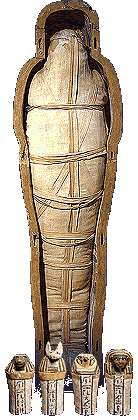

|  |
|
Canopic jars - Duamutef
 During the mummification process, the internal organs were removed from the body. Before about 1000 B.C., the organs were dried and placed in hollow 'canopic jars'. After about 1000 B.C., the internal organs were often put back into the body after being dried. When this happened, the ancient Egyptians placed solid or empty canopic jars in the person's tomb.
The lids of canopic jars represented gods called the 'four sons of Horus'. These gods protected the internal organs. Duamutef was the jackal-headed god who protected the stomach.
|